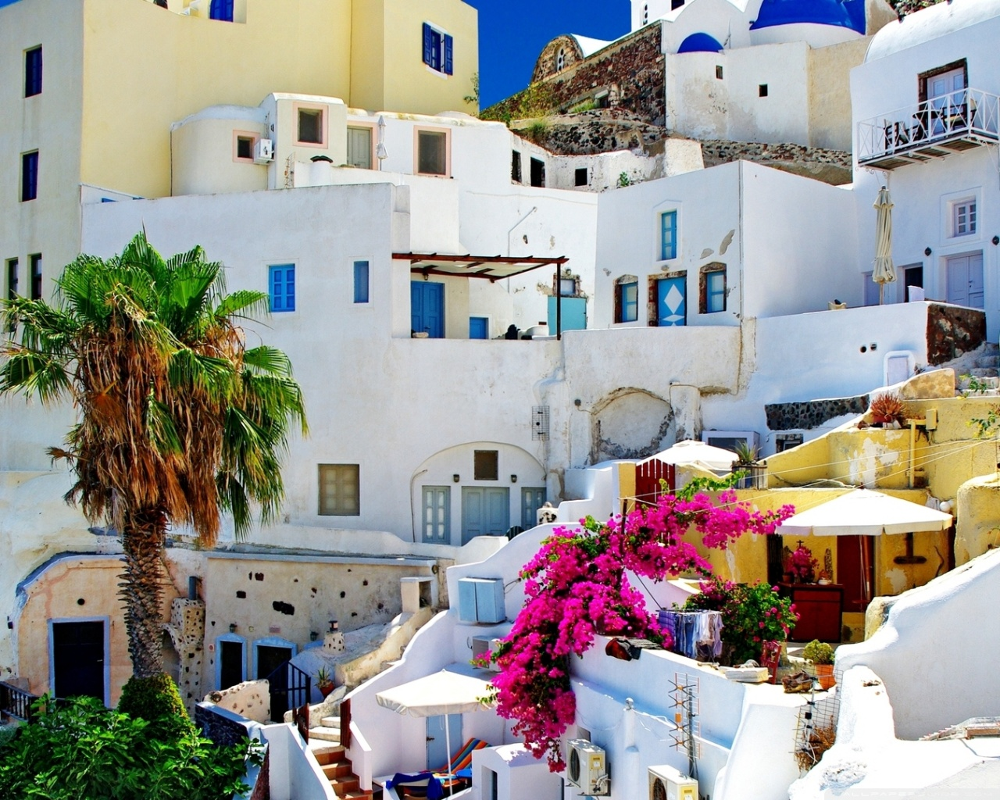

Home
Infrastructure
Faculty
Courses
Registration
Activities
Placement Records
Contact us
Infrastructure

The college has a beautiful infrastructure with surrounding greenery. The location of the college makes it even more a beutiful place to live in.
The main buildings consists of the :
- Architecture block
- Electrical Block
- Mechanical Block
- Computer Science Block
- Computer Applications Block
- Campus facilities
iIT will be home to cutting-edge technology, state-of-the-art equipment and world class infrastructure. In line with iIT’s belief in providing quality education to aspiring students, the campus at Jaipur will provide best-in-class facilities which aid not just academic excellence but also holistic personality development.
- Central Library
Central library being the single repository of all academic resources within the campus will have the best and the latest books, journals and digital resources. The planned central library will be built in an area of 10,000 Sq. Mts. with a seating capacity of 2000 students in reading rooms across 3,000 sq. mts.
No. of Books: 125,000
No. of Journals: 500
Online Journals: 1,000
Bound volumes: To be 10,000
Book-bank books: 10,000
Video CDs: 5,000
Computer Based Tutorials: 200
- Sports and Games
iIT will establish a Department of Physical Education for organizing sports and games events at Inter-collegiate, Inter-University, district, state and national levels encouraging athletes and athleticism.
Necessary infrastructure to host outdoor Games like Cricket, Tennis, Basketball, Football, Volleyball, and Hockey will be in place. Indoor infrastructure like gyms, Shuttle badminton with wooden flooring, courts/facilities for Squash, Table Tennis, Chess, Carom etc. will also be ready in due time.
Swimming-pools and Basketball courts with Flood-lights are also being planned to enable students experience a holistic education experience.
- Hostels Students will be accommodated, with twin sharing basis, in hired 3 bed room flats, at Vatika Infotech City during the first year at the temporary campus.
Separate accommodation for boys and girls will be arranged.